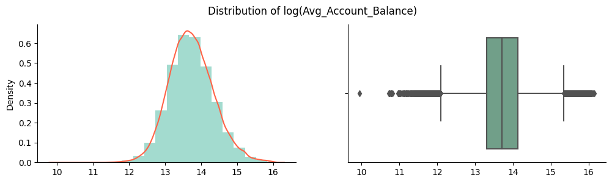
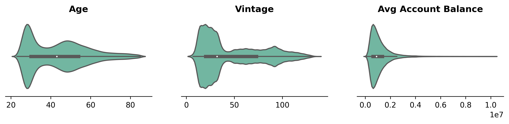
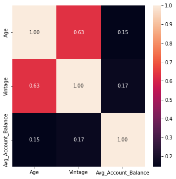
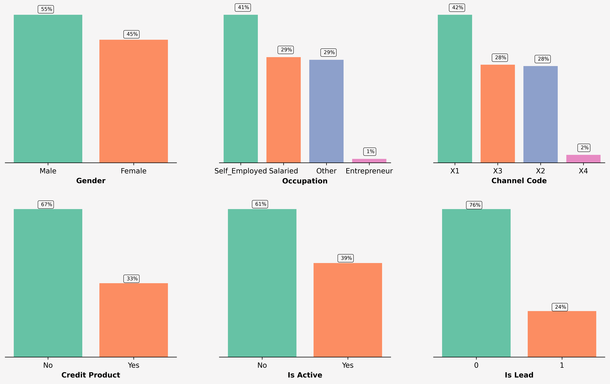
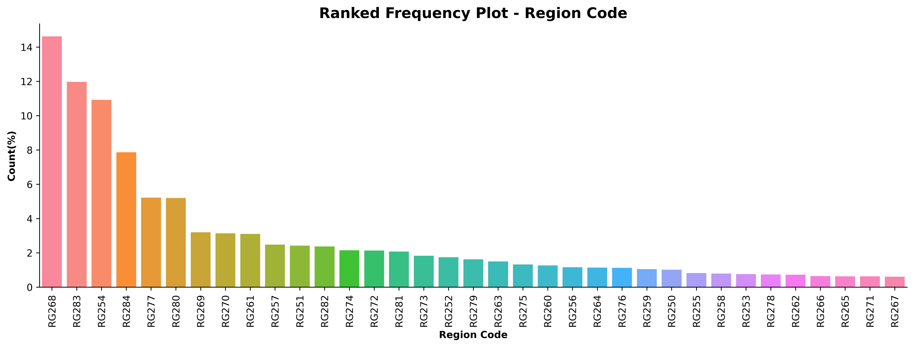
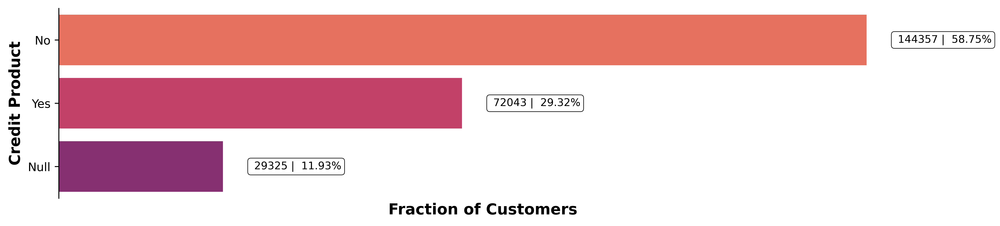
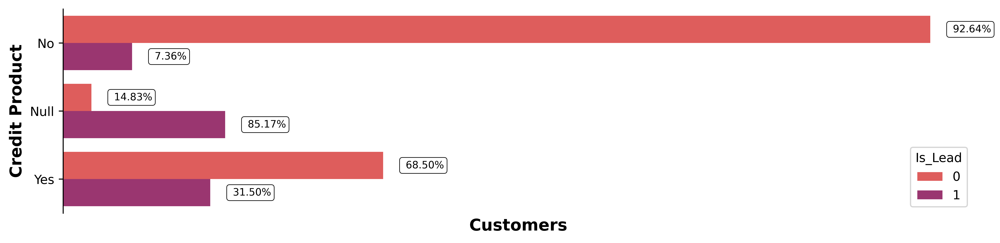
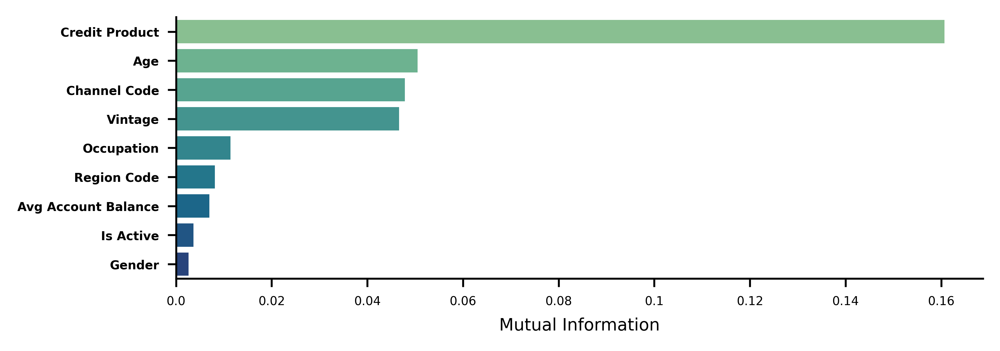

# collapse
# Imports
import warnings
import numpy as np
import pandas as pd
import seaborn as sns
from pathlib import Path
import matplotlib.pyplot as plt
# Set output display options
warnings.filterwarnings('ignore')
%matplotlib inline
pd.set_option('display.max_columns', None)
pd.set_option('display.max_rows', None)
pd.options.display.float_format = '{:.3f}'.format
# Set color palette for plots
sns.set_palette('Set2')
# Plots Background color
bg_color = '#f6f5f5'“This project delves into the EDA of Credit Card Lead Prediction dataset. The problem is to predict if an existing customer of a mid-sized Bank is likely to purchase their Credit Card.”
- toc: true
- branch: master
- badges: true
- comments: true
- categories: [project, machine-learning, notebook, python]
- image: images/vignette/eda.jpg
- hide: false
- search_exclude: false
Problem Statement
Credit Card Lead Prediction
Happy Customer Bank is a mid-sized private bank that deals in all kinds of banking products, like Savings accounts, Current accounts, investment products, credit products, among other offerings. The bank also cross-sells products to its existing customers and to do so they use different kinds of communication like tele-calling, e-mails, recommendations on net banking, mobile banking, etc. In this case, the Happy Customer Bank wants to cross sell its credit cards to its existing customers. The bank has identified a set of customers that are eligible for taking these credit cards.
Now, the bank is looking for your help to understand various patterns among the data that might be useful in identifying customers that could show higher intent towards a recommended credit card, given: 1. Customer details (gender, age, region etc.) 2. Details of his/her relationship with the bank (Channel_Code,Vintage, ’Avg_Asset_Value etc.)
Imports and Display Options
Data Eyeballing
# Load data and drop ID column
data_dir = Path('./data')
df = pd.read_csv(data_dir / 'train.csv')
df.drop('ID', axis=1, inplace=True)
# Convert Is_Lead column into categorical variable
df['Is_Lead'] = df['Is_Lead'].astype('category')
df.info()<class 'pandas.core.frame.DataFrame'>
RangeIndex: 245725 entries, 0 to 245724
Data columns (total 10 columns):
# Column Non-Null Count Dtype
--- ------ -------------- -----
0 Gender 245725 non-null object
1 Age 245725 non-null int64
2 Region_Code 245725 non-null object
3 Occupation 245725 non-null object
4 Channel_Code 245725 non-null object
5 Vintage 245725 non-null int64
6 Credit_Product 216400 non-null object
7 Avg_Account_Balance 245725 non-null int64
8 Is_Active 245725 non-null object
9 Is_Lead 245725 non-null category
dtypes: category(1), int64(3), object(6)
memory usage: 17.1+ MBDataset can be considered small, as there are only 9 Independant variables and ~250K Entries. This information can be used to select the model and cross-validation strategy.
df.head()| Gender | Age | Region_Code | Occupation | Channel_Code | Vintage | Credit_Product | Avg_Account_Balance | Is_Active | Is_Lead | |
|---|---|---|---|---|---|---|---|---|---|---|
| 0 | Female | 73 | RG268 | Other | X3 | 43 | No | 1045696 | No | 0 |
| 1 | Female | 30 | RG277 | Salaried | X1 | 32 | No | 581988 | No | 0 |
| 2 | Female | 56 | RG268 | Self_Employed | X3 | 26 | No | 1484315 | Yes | 0 |
| 3 | Male | 34 | RG270 | Salaried | X1 | 19 | No | 470454 | No | 0 |
| 4 | Female | 30 | RG282 | Salaried | X1 | 33 | No | 886787 | No | 0 |
# collapse
# Categorical cols
cat_cols = df.select_dtypes(include=['category', 'object']).columns
# Numerical cols
num_cols = df.select_dtypes(include=['int64']).columns
print(f'''
{len(cat_cols)}-Categorical Columns: {cat_cols.tolist()},
{len(num_cols)}-Numerical Columns: {num_cols.tolist()}
''')
7-Categorical Columns: ['Gender', 'Region_Code', 'Occupation', 'Channel_Code', 'Credit_Product', 'Is_Active', 'Is_Lead'],
3-Numerical Columns: ['Age', 'Vintage', 'Avg_Account_Balance']
# Check for missing values
df.isnull().sum()Gender 0
Age 0
Region_Code 0
Occupation 0
Channel_Code 0
Vintage 0
Credit_Product 29325
Avg_Account_Balance 0
Is_Active 0
Is_Lead 0
dtype: int64print(f'{df.isnull().sum().sum() / df.shape[0] * 100: .3f}%\
values in \'Credit_Product\' are missing') 11.934% values in 'Credit_Product' are missingprint(df['Vintage'].nunique(), f'Unique values in \'Vintage\'',
df['Age'].nunique(), f'Unique values in \'Age\'')66 Unique values in 'Vintage' 63 Unique values in 'Age'Descriptive Statistics
# Descriptive statistics for numerical columns
df.describe()| Age | Vintage | Avg_Account_Balance | |
|---|---|---|---|
| count | 245725.000 | 245725.000 | 245725.000 |
| mean | 43.856 | 46.959 | 1128403.101 |
| std | 14.829 | 32.353 | 852936.356 |
| min | 23.000 | 7.000 | 20790.000 |
| 25% | 30.000 | 20.000 | 604310.000 |
| 50% | 43.000 | 32.000 | 894601.000 |
| 75% | 54.000 | 73.000 | 1366666.000 |
| max | 85.000 | 135.000 | 10352009.000 |
# Descriptive statistics for categorical columns
df.describe(include=['O', 'category'])| Gender | Region_Code | Occupation | Channel_Code | Credit_Product | Is_Active | Is_Lead | |
|---|---|---|---|---|---|---|---|
| count | 245725 | 245725 | 245725 | 245725 | 216400 | 245725 | 245725 |
| unique | 2 | 35 | 4 | 4 | 2 | 2 | 2 |
| top | Male | RG268 | Self_Employed | X1 | No | No | 0 |
| freq | 134197 | 35934 | 100886 | 103718 | 144357 | 150290 | 187437 |
Univariate Analysis
# Plot KDE Plots for all numerical columns
fig, axes = plt.subplots(nrows=3, ncols=3, figsize=(15, 9))
for i, col in enumerate(num_cols):
sns.kdeplot(df[col], shade=True, label=col, ax=axes[0, i], color='Tomato')
sns.distplot(df[col], hist=True, kde=False, label=col, bins=20, ax=axes[1, i])
sns.boxplot(x=col, data=df, ax=axes[2, i], color='#D1E4CD')
# set title and remove x-axis labels
axes[0, i].set_xlabel("")
axes[1, i].set_xlabel("")
axes[2, i].set_xlabel("")
axes[0, i].set_ylabel("")
axes[0, i].set_title(col)
# Remove Spines
for spine in ['right', 'top']:
axes[0, i].spines[spine].set_visible(False)
axes[1, i].spines[spine].set_visible(False)
axes[2, i].spines[spine].set_visible(False)
plt.tight_layout()
We can use log-transform to make the distribution of ‘Avg_Account_Balance’ more normal, as it approximately follows a log-normal distribution.
# Using log transformation to normalize the 'Avg_Account_Balance'
log_aab = np.log(df['Avg_Account_Balance'])
fig, axes = plt.subplots(nrows=1, ncols=2, figsize=(12, 3), dpi=100)
fig.suptitle('Distribution of log(Avg_Account_Balance)')
sns.distplot(log_aab, label='log(Avg_Account_Balance)',
kde=True, hist=True, bins=20, color='#19A789', ax=axes[0], kde_kws={'color': 'Tomato'})
sns.boxplot(x=log_aab, ax=axes[1], color='#69A789')
axes[0].set_xlabel("")
axes[1].set_xlabel("")
# Remove Spines
for spine in ['right', 'top']:
axes[0].spines[spine].set_visible(False)
axes[1].spines[spine].set_visible(False)
plt.show()
# Plot Violen plot for all numerical columns
fig, axes = plt.subplots(nrows=1, ncols=3, figsize=(12, 2), dpi=300)
for i, col in enumerate(num_cols):
sns.violinplot(x=col, data=df, ax=axes[i])
axes[i].set_xlabel("")
axes[i].set_ylabel("")
axes[i].set_title(" ".join(col.split('_')), weight='bold')
# Remove Spines
for spine in ['left', 'right', 'top']:
axes[i].spines[spine].set_visible(False)
axes[i].axes.get_yaxis().set_visible(False)
# Plot correlation matrix for all numerical columns
corr = df[num_cols].corr()
fig, ax = plt.subplots(figsize=(6, 6))
sns.heatmap(corr, annot=True, fmt='.2f', ax=ax)
plt.show()
There is a positive correlation between Vintage and Age which can be further explored using boxplot and scatterplot. No other numerical variables have a strong correlation.
# collapse
# plot() for all categorical columns
cat_feats = list(cat_cols)
cat_feats.remove('Region_Code')
plt.rcParams['figure.dpi'] = 600
fig = plt.figure(figsize=(15, 9), facecolor='#f6f5f5')
gs = fig.add_gridspec(2, 3)
gs.update(wspace=0.25, hspace=.25)
for i, col in enumerate(cat_feats):
ax = fig.add_subplot(gs[i // 3, i % 3])
# Get the sorted value_counts and plot the bar plot
col_data = df[col].value_counts(normalize=True)\
.rename('Percentage').mul(100)\
.reset_index().sort_values(ascending=False, by='Percentage')
# Plot customizations
for spine in ['right', 'top', 'left']:
ax.spines[spine].set_visible(False)
ax.set_facecolor(bg_color)
ax.axes.yaxis.set_visible(False)
ax_sns = sns.barplot(x=col_data['index'], y=col_data['Percentage'], ax=ax, saturation=1)
# Customize plot
if i % 3 == 0:
ax_sns.set_ylabel("Count(%)", weight='bold')
else:
ax_sns.set_ylabel("")
ax_sns.set_xlabel(" ".join(col.split('_')), weight='bold')
# Add patches for data percentages
for p in ax.patches:
value = f'{p.get_height(): .0f}%'
x = p.get_x() + p.get_width() / 2 - 0.1
y = p.get_y() + p.get_height() + 2
ax.text(x, y, value, ha='left', va='center', fontsize=7,
bbox=dict(facecolor='none', edgecolor='black', boxstyle='round', linewidth=0.5))
Dataset is highly imbalanced, as there are only 24% entries which are leads and 76% entries which are not. Due to the small size of the dataset, Upsampling Strategy to hadle imbalanced data could work well.
There is also a large imbalance in the dataset for Occupation and Channel_Code categories as there are very few entries for Enterpreneur and X4 respectively.
plt.figure(figsize=(16, 5), dpi = 600)
col_data = df['Region_Code'].value_counts(normalize=True)\
.rename('Percentage').mul(100).reset_index().sort_values(ascending=False, by='Percentage')
sns.barplot(x=col_data['index'], y=col_data['Percentage'], saturation=1)
plt.xticks(rotation=90)
plt.xlabel('Region Code', weight='bold')
plt.ylabel('Count(%)', weight='bold')
plt.title('Ranked Frequency Plot - Region Code', weight='bold', fontsize=15)
for spine in ['top', 'right']:
plt.gca().spines[spine].set_visible(False)
plt.show()
Bivariate Analysis
# Plot count of Leads by Region Code
fig = plt.figure(facecolor=bg_color, dpi = 600)
g = sns.FacetGrid(df, col='Region_Code', col_wrap=6)
g.map(sns.countplot, 'Is_Lead', saturation=1)
plt.show()<Figure size 3600x2400 with 0 Axes>
# Plot KDE Plots for all numerical columns with hue=cat_col
fig, axes = plt.subplots(nrows=len(cat_feats), ncols=3, figsize=(12, len(cat_cols)*2), dpi=600)
for i, cat_col in enumerate(cat_feats):
for j, num_col in enumerate(num_cols):
ax_sns = sns.kdeplot(x = num_col, data=df, hue=cat_col, label=col, ax=axes[i, j])
# Customize the plot
ax_sns.tick_params(axis='y', labelsize=0)
axes[i, j].set_xlabel(" ".join(num_col.split('_')), weight='bold')
if j != 0:
axes[i, j].set_ylabel("")
axes[i, j].legend_.remove()
else:
axes[i, j].set_ylabel("Density", weight='bold')
for spine in ['top', 'right']:
axes[i, j].spines[spine].set_visible(False)
plt.tight_layout()
Almost all the categories in each categorical variable follows the same distribution.
# Plot Box-Plot for all numerical columns with hue=cat_col
fig, axes = plt.subplots(nrows=len(cat_feats), ncols=3, figsize=(12, 3*len(cat_feats)), dpi=600)
for i, cat_col in enumerate(cat_feats):
for j, num_col in enumerate(num_cols):
ax_sns = sns.boxplot(y=num_col, x=cat_col, data=df, ax=axes[i,j])
# Customize the plot
axes[i, j].set_ylabel(num_col, weight='bold')
axes[i, j].set_xlabel(cat_col, weight='bold')
for spine in ['top', 'right']:
axes[i, j].spines[spine].set_visible(False)
plt.tight_layout()
There are huge number of outliers for each categorical variable in Avg_Account_Balance.
# Plot Scatter-Plot between Age and Vintage
grid = sns.FacetGrid(df, row='Occupation', col='Is_Active', hue='Is_Lead', aspect=1.5, size=4, palette='Set2')
grid.map(plt.scatter, 'Age', 'Avg_Account_Balance', alpha=0.5)
grid.add_legend()
plt.show()
# Plot Scatter-Plot between Age and Vintage
grid = sns.FacetGrid(df, row='Occupation', col='Credit_Product', hue='Is_Lead', aspect=1.5, size=4, palette='Set2')
grid.map(plt.scatter, 'Age', 'Avg_Account_Balance', alpha=0.5)
grid.add_legend()
plt.show()
# Plot Scatter-Plot between Age and Vintage
grid = sns.FacetGrid(df, row='Occupation', col='Gender', hue='Is_Lead', aspect=1.5, size=4, palette='Set2')
grid.map(plt.scatter, 'Age', 'Avg_Account_Balance', alpha=0.5)
grid.add_legend()
plt.show()
# Plot Scatter-Plot between Age and Vintage
grid = sns.FacetGrid(df, row='Occupation', col='Channel_Code', hue='Is_Lead', aspect=1.5, size=4, palette='Set2')
grid.map(plt.scatter, 'Age', 'Avg_Account_Balance', alpha=0.5)
grid.add_legend()
plt.show()
From above all Scatter-Plots, we can see that almost every Self_Employed individual whose Age is above 40 is a lead. We can use this information to create a new feature.
Relationship between Missing Values and Target
# collapse
# Fraction of customers with missing values who are leads
df['Credit_Product'][df['Credit_Product'].isnull()] = 'Null'
na_df = df['Credit_Product'].value_counts()\
.rename('Fraction').reset_index().sort_values(ascending=False, by='Fraction')
fig = plt.figure(dpi = 600, figsize=(13,3))
ax_sns = sns.barplot(y=na_df['index'], x=na_df['Fraction'], orient='h',
saturation=1, palette='flare')
# Remove Spines
for spine in ['top', 'right', 'bottom']:
plt.gca().spines[spine].set_visible(False)
# Disable ticks
plt.tick_params(axis='x', which='both', bottom=False, top=False, labelbottom=False)
# Customize the plot
plt.xlabel('Fraction of Customers', weight='bold', fontsize=13)
plt.ylabel('Credit Product', weight='bold', fontsize=13)
# Add patches
for p in ax_sns.patches:
value = f'{p.get_width(): .0f} | {p.get_width() / df.shape[0] * 100: 0.2f}%'
x = p.get_x() + p.get_width() + 5e3
y = p.get_y() + p.get_height() / 2
ax_sns.text(x, y, value, ha='left', va='center', fontsize=9,
bbox=dict(facecolor='none', edgecolor='black', boxstyle='round', linewidth=0.5))
plt.show()
na_df = df.groupby('Credit_Product')['Is_Lead'].value_counts(normalize=True)
# convert na_df to dataframe
na_df = na_df.reset_index()
na_df.columns = ['Credit_Product', 'Is_Lead', 'Fraction']
# swap rows at index 2 and 3
na_df.loc[2], na_df.loc[3] = na_df.loc[3], na_df.loc[2]
na_df| Credit_Product | Is_Lead | Fraction | |
|---|---|---|---|
| 0 | No | 0 | 0.926 |
| 1 | No | 1 | 0.074 |
| 2 | Null | 0 | 0.148 |
| 3 | Null | 1 | 0.852 |
| 4 | Yes | 0 | 0.685 |
| 5 | Yes | 1 | 0.315 |
# collapse
fig = plt.figure(dpi=600, figsize=(13, 3))
ax_sns = sns.countplot(y='Credit_Product', data=df, hue='Is_Lead', palette='flare', saturation=1, orient='h')
ax_sns.set_xlabel('Customers', weight='bold', fontsize=13)
ax_sns.set_ylabel('Credit Product', weight='bold', fontsize=13)
# Remove ticks
plt.gca().tick_params(axis='x', which='both', bottom=False, labelbottom=False)
# Remove Spines
for spine in ['top', 'right', 'bottom']:
ax_sns.spines[spine].set_visible(False)
# Add patches
na_f = na_df['Fraction'].values
idx = 0
for p in ax_sns.patches:
if idx <= na_df.shape[0] // 2:
value = f"{na_f[idx] * 100: 0.2f}%"
idx += 2
elif idx == na_df.shape[0] // 2 + 1:
value = f"{na_f[idx] * 100: 0.2f}%"
idx = 1
else:
value = f"{na_f[idx] * 100: 0.2f}%"
idx += 2
x = p.get_x() + p.get_width() + 3e3
y = p.get_y() + p.get_height() / 2
ax_sns.text(x, y, value, ha='left', va='center', fontsize=8,
bbox=dict(facecolor='none', edgecolor='black', boxstyle='round', linewidth=0.5))
plt.show()
Calculate Feature Importance using Mutual Information
# collapse
from sklearn.feature_selection import mutual_info_classif
from sklearn.preprocessing import OrdinalEncoder, RobustScaler
cat_cols = cat_cols.tolist()
cat_cols.remove('Is_Lead')
# Scale the numerical columns
scaler = RobustScaler()
df[num_cols] = scaler.fit_transform(df[num_cols])
# Encode categorical columns
encoder = OrdinalEncoder()
df[cat_cols] = encoder.fit_transform(df[cat_cols])
# Get the target variable
target = df.pop('Is_Lead')
# Get the indices of the categorical features
cols = df.columns.tolist()
cat_idx = [i for i in range(len(cols)) if cols[i] in cat_cols]
# Calculate Mutual Information
mi = mutual_info_classif(df, target, discrete_features=cat_idx)
mi_df = pd.DataFrame(mi, index=df.columns, columns=['MI'])
mi_df = mi_df.sort_values(by='MI', ascending=False)
mi_df.head()| MI | |
|---|---|
| Credit_Product | 0.161 |
| Age | 0.051 |
| Channel_Code | 0.048 |
| Vintage | 0.047 |
| Occupation | 0.011 |
# Plot MI from mi_df
fig = plt.figure(dpi=600, figsize=(6, 2))
sns.barplot(x='MI', y=mi_df.index, data=mi_df, palette='crest', saturation=1)
# Remove ticks
# plt.gca().tick_params(axis='x', which='both', bottom=False, labelbottom=False)
# Remove Spines
for spine in ['top', 'right']:
plt.gca().spines[spine].set_visible(False)
# Remove "_" from yticklabels
plt.gca().set_yticklabels(mi_df.index.str.replace('_', ' '), fontsize=5, weight='bold')
plt.gca().set_xticklabels(plt.gca().get_xticks(), fontsize=5)
plt.xlabel('Mutual Information', fontsize=7)
plt.show()